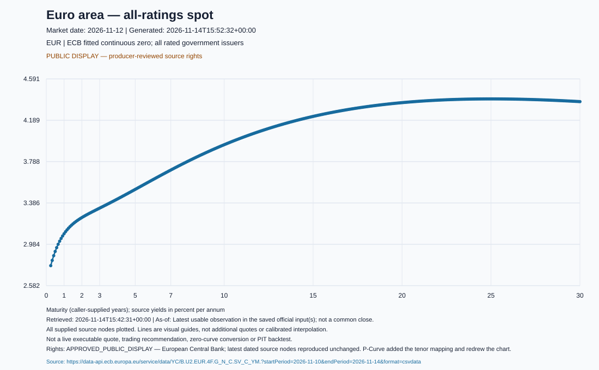

US Treasury — nominal par
2026-11-13 · Treasury nominal constant-maturity par

Generated · Author: pengyi
What a beautiful curve. Editorial appreciation only.
Classification: IMF World Economic Outlook, Statistical Appendix. Hong Kong SAR is listed separately as advanced, mainland China as emerging and developing. The euro area is a regional issuer composite.
Different local observation days and curve conventions. Levels are not a comparable spread. Charts connect source nodes as visual guides only; no missing tenor is filled.
2026-11-13 · Treasury nominal constant-maturity par
2026-11-12 · MOF constant maturity; semiannual compounding

2026-11-12 · ECB fitted continuous zero; AAA government issuers

2026-11-12 · ECB fitted continuous zero; all rated government issuers

2026-11-11 · RBA F2 nominal government yields; interpolated by source

Bring the date, market, convention, source and rights. Discuss a curve or report